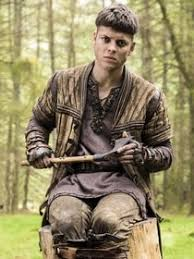
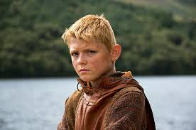
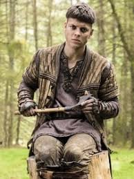
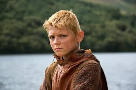

Ragnar Lodbrok
Ragnar Lodbrok (en vieux norrois Ragnarr Loðbrók) dont le surnom signifie 'aux braies velues', était un roi viking légendaire. L'on trouve trace de ses exploits aussi bien en Scandinavie, en Francie qu'en Angleterre anglo-saxonne au IXe siècle dans des sagas en vieux norrois, des poèmes et des sources latines médiévales. Les éléments les plus courants de ces récits sont ses mariages avec Thora et Aslaug, ainsi que la naissance de nombreux fils célèbres, dont Ivar le Désossé, Bjorn Côtes-de-fer, Sigurd Œil de Serpent, Hvitserk et Ubba. La Gesta Danorum (La Geste des Danois) du XIIIe siècle, un ouvrage sur l'histoire du Danemark, fait mention d'une troisième épouse possible, Lagertha, ainsi que d'une quatrième, Swanloga.
La Saga de Ragnar Lodbrok
La source la plus connue et la plus prolifique sur la vie et les hauts faits de Ragnar est la Saga de Ragnar Lodbrok (vieux norrois : Ragnars saga loðbrókar), écrite en islandais au XIIIe siècle. Elle fait partie du genre dit fornaldarsögur - des sagas légendaires dont l'histoire se déroule avant la colonisation de l'Islande à partir des années 870 - et s'inscrit parfaitement dans la vague d'écriture de sagas islandaises qui a submergé l'île à cette époque. Ces types de légendes héroïques avaient tendance à se rapporter aux origines mythiques des familles scandinaves historiques et se terminaient souvent par la mort de leur champion. La Saga de Ragnar Lodbrok présente Ragnar comme l'ancêtre d'une famille islandaise et met en scène des souverains indépendants de différents royaumes qui interagissent entre eux, et, conformément aux canons du genre, se termine par sa mort.
 


